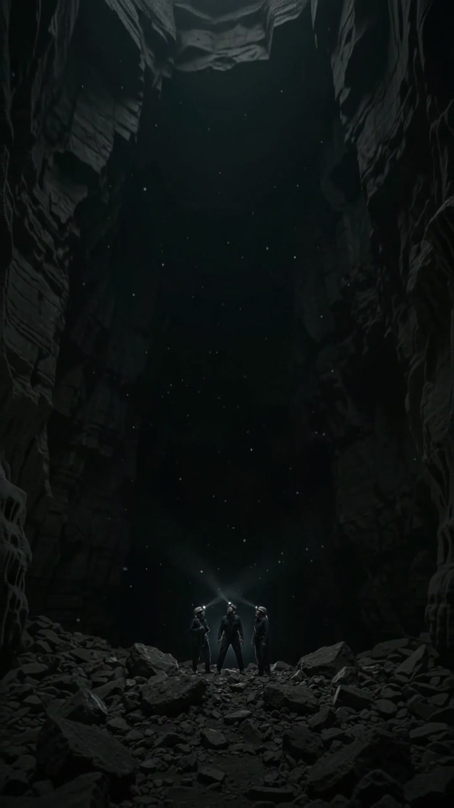
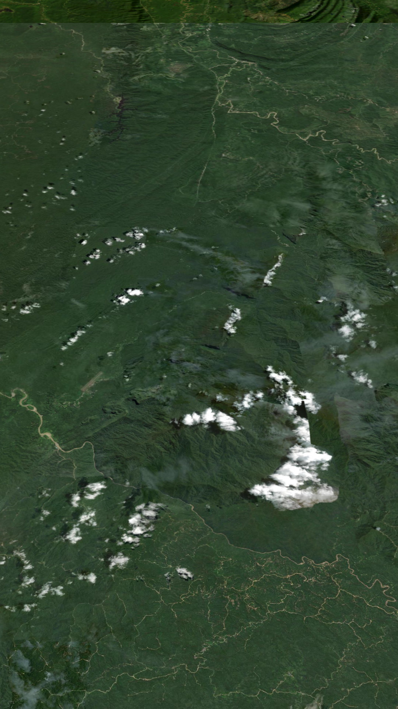

FAKTA NEGERI · #2
ILUSTRASI · AI
JAN 1981EKSPEDISI MULU '80
PENEMU · TIGA PENJELAJAH GUA BRITAIN
Andy Eavispenjelajah gua
Dave Checkleypenjelajah gua
Tony Whitepenjelajah gua
Gua Nasib Bagus (Good Luck Cave) · Gunung Mulu
AGORAFOBIAtakut ruang terbuka… di dalam gua
SARAWAK CHAMBER · SAIZ
0M PANJANG
0M LEBAR
0M TINGGI
0
padang bola164,459 m² luas lantai
BILIK GUA TERBESAR DUNIA · IKUT KELUASAN
#1
Sarawak ChamberGunung Mulu, Sarawak, Malaysia
164,459 m²
Ikut isi padu: nombor 2 dunia, selepas Miao Room (China)
±3 JUTA kelawar
TAPAK WARISAN DUNIAUNESCO2000
Negeri mana kita bongkar lepas ni? ↓